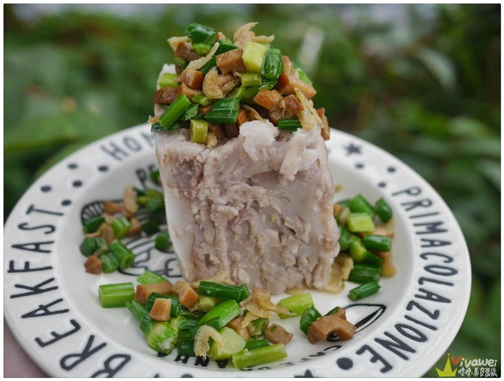

用五花肉煸出的油半煎炸豆乾，豆乾煎至兩面金黃
另起鍋取五花肉煎出來的部份油脂加入蒜末略炒過，再倒入煸好的五花肉和煎至金黃的豆乾，加入糖拌炒使其融化，加入醬油拌炒。
倒入泡魷魚的水300cc，大火收乾，讓豬肉更軟爛點並且使豆乾吸附肉汁
魷魚浸泡8小時，逆紋切條狀，前步驟炒乾後加入魷魚，胡椒粉，魷魚不宜炒過久，口感會太老
加入米酒、蒜苗葉，再加蒜苗白和芹菜，最後加香油  首頁 客家小炒介紹 九層糕介紹 學習心得
練習用音樂、影片
Your browser does not support the audio element. Your browser does not support the video tag.